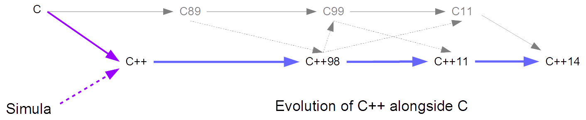

|
Software
Development |
 |
|
The evolution of C++ is documented in the ISO/IEC 14882 set of standards, informally known as C++98, C++11 and C++14, while the evolution of C is documented in the ISO/IEC 9899 set of standards, informally known as C89, C99 and C11. Standard C++ and Standard C are now considered siblings.  The standards committees of C++ and C have cooperated to keep both as closely related as possible without jeopardizing their distinct objectives: proximity to the application domain (C++) and proximity to the metal (C). In general, C++ is more expressive than C. This appendix describes the differences in terminology between C++ and C along with the legacy features that C++ inherited from C but have been removed or deprecated with the latest standards. Differences between C++ and C Terminology Definition In C++, a definition identifies a declaration that attaches meaning to an identifier. A definition is eventually used to allocate memory, but does not necessarily allocate it at declaration time. In C, a definition allocates memory for an identifer, whether a variable, an object or program code. The term is used more conservatively. Derived Type In C++, a derived type is a compound type that is derived from another compound type through inheritance. A compound type is a structure or class that is composed of other types, which may be fundamental or compound or a combination of the two. In C, a derived type is a structure. C does not support inheritance. A structure, like a class in C++, is composed of other types, which may be derived types or fundamental types or a combination of both. Class Identification In C++, we only include the keyword that identifies a class (struct or class) in the definition of the class itself and in a forward declaration. We may omit it in any subsequent object definition or parameter declaration. C requires the keyword that identifies a derived type (struct) in each declaration of a derived type. These declarations include object definitions and parameter declarations. For example,
Prototyping In C++, a function prototype must list all of its parameter types in their proper order. This constraint enables the language to support both overloading and references. In C, listing the parameter types in a function prototype is optional. The code on the right compiles successfully under a C compiler. A C++ compiler requires the code on the left:
An Empty Parameter List In C++, an empty parameter list identicates to the compiler that the function has no parameters. In C, an empty parameter list has either of two interpretations:
The recommended way to specify that a function has no parameters in C is to include the keyword void between the parentheses in the function header. Legacy Code Applications written for pre-standard C++ compilers may include code that requires upgrading to meet the stricter requirements of Standard C++. Common issues include:
Some compilers can still create executable files from pre-standard C++ source code. A copy of the Borland Win 32 5.5 compiler can be downloaded here. Many compilers have removed the deprecated pre-standard facilities and only conform to those features (or a majority of them) specified in C++11. for int scope In pre-standard C++, the scope of a variable defined in the for clause extends beyond the closing brace of the block that encloses the iteration. In C++11, the scope of such a variable extends only to the end of the iteration block. For example,
A C++11 compliant compiler reports this error. Libraries The pre-standard C++ libraries are available with the Borland Win 32 5.5 compiler. They are currently deprecated in the g++ GNU compiler. They are not available in the Visual Studio 2012 compiler. iostream The pre-standard version of the iostream library is a simple wrapper on the C functions prototyped in the stdio.h header file. This pre-standard version defined the cin, cout, cerr and clog objects as global objects rather than objects in the std namespace. The header file for this pre-standard version is iostream.h. The standard version of the iostream library was fully redesigned with C++98 and notably larger than its C-like predecessor. All of the functions in the newer library are declared and defined in the std namespace. Compare the coding for the two versions listed below:
C-Style Libraries In pre-standard C++, the header files for the C libraries have .h extensions as in the C language. Pre-standard library classes, objects and prototypes are all defined in the global namespace. C++98 introduced unique header file names to distinguish the standard libraries from their pre-standard predecessors. The standard header file names begin with the character c are followed by the C-style name and do not include the .h extension. The standard files declare the prototypes and objects in the std namespace. This renaming convention applied wherever the standard introduced minor changes. C++98 renamed stdio.h as cstdio. The code for cstdio is about the same size as the code for stdio.h. Similarly, <cstring> is the C++ version of the C header file <string.h>, <cmath> is the C++ version of <math.h>, <cstdlib> is the C++ version of <stdlib.h> and <cctype> is the C++ version of <ctype.h>. With the standard C++ libraries, we identify the namespace:
|
|
|
Top
|
|
|
Next: Table of Contents
|
| Designed by Chris Szalwinski | Copying From This Site |